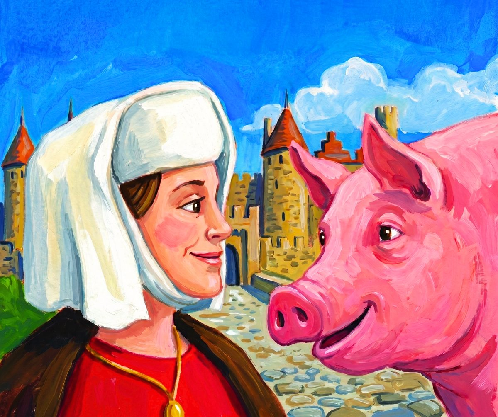

Choisissez votre langue
Version française
Le son ne se charge pas. Vérifiez votre connexion Internet, puis rechargez la page.
Avec des écouteurs, l'immersion est totale.

Livre audio
Choisissez votre langue
Le son ne se charge pas. Vérifiez votre connexion Internet, puis rechargez la page.
Avec des écouteurs, l'immersion est totale.